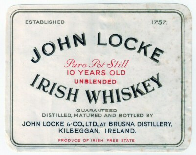

Page 1 of 1
Collectors - what's your favourite bottle?

Posted:
Wed Jul 29, 2009 4:56 pmby jcskinner
And why?
Some people in the society have spent years building up formidable collections of Irish and other whiskey. But I was wondering whether people have favourites among such large collections?
It could be a bottle given to you by someone special, or a rare or ancient bottle that can't be found anymore. Or it can be a bottle that you just couldn't be without for some other reason.
Basically, what's the one bottle you'd grab if the house was on fire, and why is it your favourite?
To kick off - I'd say my favourite bottle is a Dunville's VR distilled around 1920. Firstly, because it's a Belfast whiskey, and there aren't many of those kicking around these days, and secondly because it's significantly older than most other bottles I have. Thirdly because I got it in Malta, but that's another story.
If I had a second favourite (there I go breaking my own rules!), it would have to be the Old Comber, as my Dad grew up in the shadow of the distillery, but was just too young to drink it before it closed for good. I was very proud to be able to get both him and me a bottle of the 33 yo bottled in the 80s. We drank his, but mine is still intact in the cupboard.
What about you? What's your favourite bottle?
Re: Collectors - what's your favourite bottle?
Posted:
Wed Jul 29, 2009 5:47 pmby IrishWhiskeyChaser
As you say a hard question ....
Probably has to be my
Black Eagle Pure Pot Still Irish Whiskey.
From Germany and bottled in the 70's and a whiskey that was distilled in the 1950's so it could easily be a Tullamore, Kilbeggan or even one of the Closed Dublin Distilleries. Really looking forward to the day I'll open this.
After that it is probably my collection (I know cheating) of Knappogues ... 1951 (x2 one a single cask) and vintages 1990-1995 and the 15yo.
Biggest disappointment which possibly could of been a contender was an old Kilbeggan which arrived broken ... I was gutted and I got it for under 100Euro

Re: Collectors - what's your favourite bottle?
Posted:
Wed Jul 29, 2009 7:05 pmby jcskinner
Interesting - a mystery favourite!
Maybe you'll be able to tell which distillery it's from if you ever crack it open?
Pity about your old Kilbeggan, though. I greatly sympathise. Part of the cork of my Dunville fell into the bottle as I brought it home, making the alcohol inside adulterated. It crushed me to think I don't have the option of ever tasting it.
Re: Collectors - what's your favourite bottle?
Posted:
Wed Jul 29, 2009 9:30 pmby Willie JJ
jcskinner wrote:Basically, what's the one bottle you'd grab if the house was on fire, and why is it your favourite?
I suspect I'd be too busy trying to drink them all, before the flames got us, to choose one.
Off the top of my head I would be pretty concerned about the 20yo 62% Talisker.
Re: Collectors - what's your favourite bottle?
Posted:
Wed Jul 29, 2009 11:20 pmby JohnM
There's a few sets I have that I like. The Powers 15 and the Midleton Reserve, bothing in the same style bottle. Or the set of Knappogues. Or the Old Irish gold 15 and 24.
Probably my favourite is the Brusna Distillery bottling. I also like the old Jameson 7s, which I have a few of. And the Powers Pure Pot Still. But the Brusna (Kilbeggan) is my favourite.
Re: Collectors - what's your favourite bottle?
Posted:
Fri Aug 21, 2009 7:13 pmby TheWhiskeyBro
I have to say my favourite is my bottle of 10yo William Jameson from c. 1920s/30s with miniature to match. Recently added a full bottle of William Jameson Irish American Whiskey from c. 1935 along with a couple of miniatures of the same. I have a bit of William Jameson ephemera to display with it also.
I love it because of its rarity, and I have never heard of other bottles from this distillery which is amazing considering the volume of output as one of the big 4 Dublin distilleries.
Re: Collectors - what's your favourite bottle?
Posted:
Fri Aug 21, 2009 8:23 pmby IrishWhiskeyChaser
A pretty cracking bottle all right ... I'm totally Jealous ...
And the fact it has been labeled 'Aged for 10yrs in the Irish Free state' makes it easy to confirm what period it is from. Irish Free State 1922-1937. Strangely I have only seen it on William Jameson and George Roe bottles but would love to know if anybody else knows of any other to do the same.
See the aforementioned bottle
HERE
Re: Collectors - what's your favourite bottle?
Posted:
Thu Aug 27, 2009 12:08 pmby John
Unfortunately I have a number of favourites; stemming from either taste or the difficulty I had getting them! However I guess amongst my favourites I would have to name the Dungourney and a Greenspot 10yo. Both represent a uniquely Irish product respected for their quality and taste.
J.
Re: Collectors - what's your favourite bottle?
Posted:
Mon Sep 21, 2009 11:11 pmby PureDrop
And the fact it has been labeled 'Aged for 10yrs in the Irish Free state' makes it easy to confirm what period it is from. Irish Free State 1922-1937. Strangely I have only seen it on William Jameson and George Roe bottles but would love to know if anybody else knows of any other to do the same.
Here's a Locke's Free State label
- 
- labels005x400.jpg (36.73 KiB) Viewed 3859 times
Re: Collectors - what's your favourite bottle?
Posted:
Fri Nov 13, 2009 10:07 amby shanel23
Favourite bottle I have is probably the Hennessy Na Geanna one - certainly not the most expensive but it was one of the first I had in the collection - also it's one that creates the most talking points with friends when they see it .
Re: Collectors - what's your favourite bottle?
Posted:
Fri Nov 13, 2009 12:22 pmby varizoltan
my first really expensiveone was Willie Napier
Re: Collectors - what's your favourite bottle?
Posted:
Sat Nov 14, 2009 1:19 amby IrishWhiskeyChaser
shanel23 wrote:Favourite bottle I have is probably the Hennessy Na Geanna one - certainly not the most expensive but it was one of the first I had in the collection - also it's one that creates the most talking points with friends when they see it .
Yes I got a couple of them too ... don't see many pop up these days either. A rear pecularity and a strange product to come from Hennessey.
Re: Collectors - what's your favourite bottle?
Posted:
Tue Oct 16, 2012 5:34 amby Joel1802
Either Willie Napier as it is the best I've ever had or Persse's Galway Whisky (Nun's Island) as I doubt I shall ever own any whisky as rare or old as it. I would be shocked if anyone employed at that distillery was still alive. The only problem is when should I try it and will it be any good?
Re: Collectors - what's your favourite bottle?
Posted:
Wed Oct 17, 2012 4:40 pmby Good Whiskey Hunting
My favorites are my Redbreasts.
I try to buy them any time I see them. They'll be popping open very soon.
I would love to find a bottle of Devereux's of Bishopwater.
Is there a thread for peoples wish list?
You'd never know what people may want and you have but don't have a particular attachment to.
I've looked around and couldn't find a topic for a collectors wish list so I'm starting one.
Re: Collectors - what's your favourite bottle?
Posted:
Wed Oct 17, 2012 7:54 pmby Joel1802
good_whiskey_hunting wrote:My favorites are my Redbreasts.
I try to buy them any time I see them. They'll be popping open very soon.
I would love to find a bottle of Devereux's of Bishopwater.
Is there a tread for peoples wish list?
You'd never know what people may want and you have but don't have a particular attachment to.
What all do you have right now? I drank my last bottle of Jameson RB not long ago.

Re: Collectors - what's your favourite bottle?
Posted:
Wed Oct 17, 2012 8:30 pmby Good Whiskey Hunting
I've some from the 60's, 70's, and 80's. I've also get some blends from Dillons time.
I've tried the 70's and 80's before and am hoping to get a few more together so I could have a good variety for tasting.
I've got 15year old's from 2005 and 2008 , one open and one closed of each. I don't have the current one yet.
Re: Collectors - what's your favourite bottle?
Posted:
Sat Nov 03, 2012 9:51 amby MyIrishHome
I have all the six first bottlings from Mackmyra (Sweden). Also I have the two bottlings from Lodhian (also Sweden but the whisky inside is scottish) They are speciaI to me since they bring out memory from my start as whisky connoisseur. I will have to work on my irish collection

Re: Collectors - what's your favourite bottle?
Posted:
Sat Nov 03, 2012 10:31 amby kurtbenoit
I have a few favourites, I have all 4 Midleton single casks from Terminal Two in Dublin Airport, Plus the Greenore 19 Year old which was exclusive to Terminal two also, and a 10 Year old Greenore that was exclusive to Belgium. Actually reducing my collection at the moment, but will keep these for a long time.
Re: Collectors - what's your favourite bottle?
Posted:
Mon Nov 05, 2012 12:21 amby TheWhiskeyBro
kurtbenoit wrote:I have a few favourites, I have all 4 Midleton single casks from Terminal Two in Dublin Airport, Plus the Greenore 19 Year old which was exclusive to Terminal two also, and a 10 Year old Greenore that was exclusive to Belgium. Actually reducing my collection at the moment, but will keep these for a long time.
What are the cask numbers of your DAA Midleton bottlings? did n't realise there had been four, cheers
Re: Collectors - what's your favourite bottle?
Posted:
Mon Nov 05, 2012 7:24 pmby matt
TheWhiskeyBro wrote:kurtbenoit wrote:I have a few favourites, I have all 4 Midleton single casks from Terminal Two in Dublin Airport, Plus the Greenore 19 Year old which was exclusive to Terminal two also, and a 10 Year old Greenore that was exclusive to Belgium. Actually reducing my collection at the moment, but will keep these for a long time.
What are the cask numbers of your DAA Midleton bottlings? did n't realise there had been four, cheers
I can confirm following;
Midleton IWC 1991 cask 48709 (2010)
Midleton IWC 1991 cask 48710 (2011)
Midleton IWC 1991 cask 49120 (2011)
Maybe I also mist one. Anyway, in Mai 2012 they still had cask 49120. And I know they had 3 cask from the beginning. Is there another cask

Re: Collectors - what's your favourite bottle?
Posted:
Thu Nov 08, 2012 11:57 amby Raven
Favourites would be 2 from the former Quins of Limerick a business that
dated from 1822 and was based in Ellen St. Limerick.
Powers 10 Year Old Dublin Whiskey
Powers 12 Year old Dublin Whiskey
Both bottled in Bond. Sadly the pub which was well known and very quaint
sold for redevelopment which never happened. Sold by NAMA a couple of
months ago to Limerick City Council ---- the site not the Whiskey!!
Re: Collectors - what's your favourite bottle?
Posted:
Thu Nov 08, 2012 12:13 pmby kurtbenoit
Regards Terminal Two Midletons.
The fourth and as far as I know, final, in this run anyway cask number is 49121. It was 270 euro, my memory says the others were 250. There was 160 bottles from this bottle, I remember sampling the first cask at the first WhiskyLive Dublin event, best nose to a whiskey I ever experienced.
Re: Collectors - what's your favourite bottle?
Posted:
Thu Nov 08, 2012 2:53 pmby JohnM
MyIrishHome wrote:I have all the six first bottlings from Mackmyra (Sweden). Also I have the two bottlings from Lodhian (also Sweden but the whisky inside is scottish) They are speciaI to me since they bring out memory from my start as whisky connoisseur. I will have to work on my irish collection
The Mackmyras are worth a fair bit now.
{kind=link}
{kind=link}